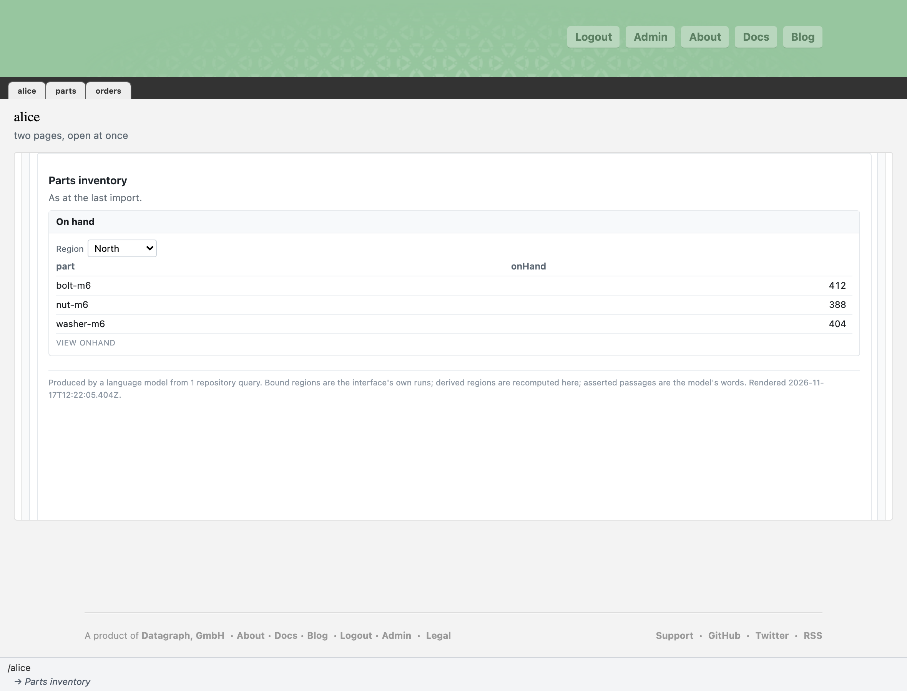
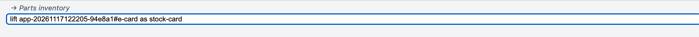
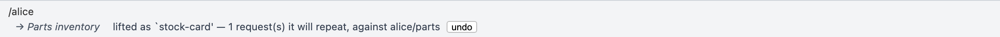
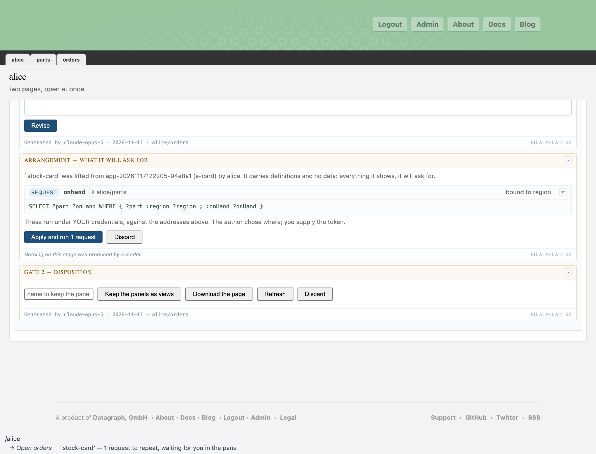
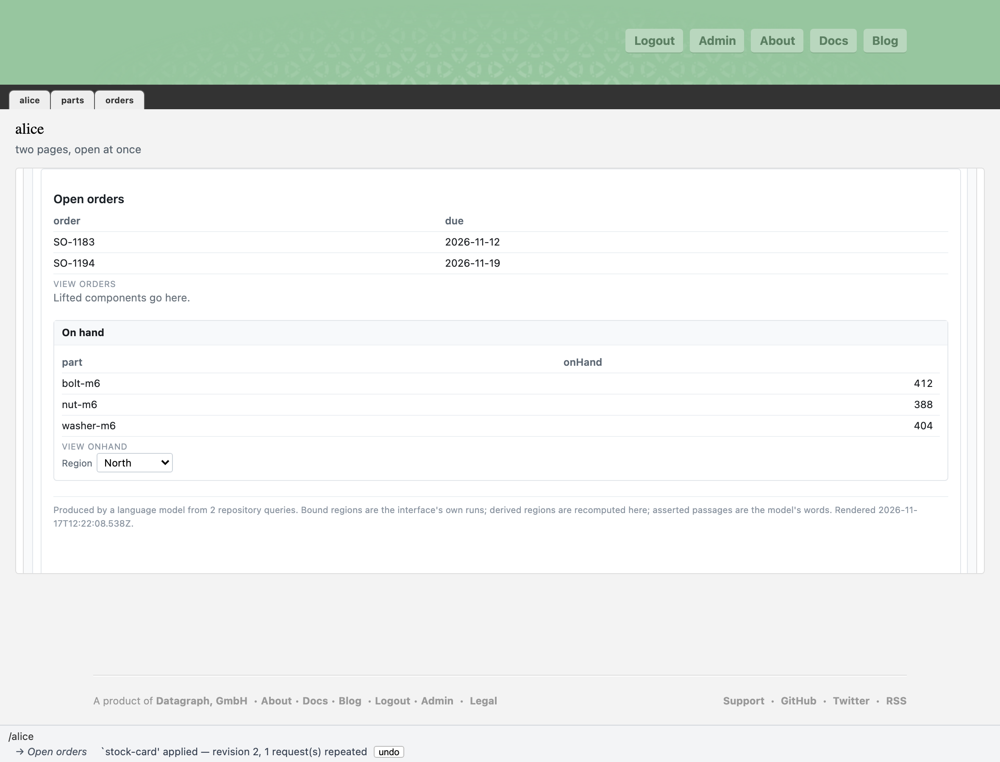
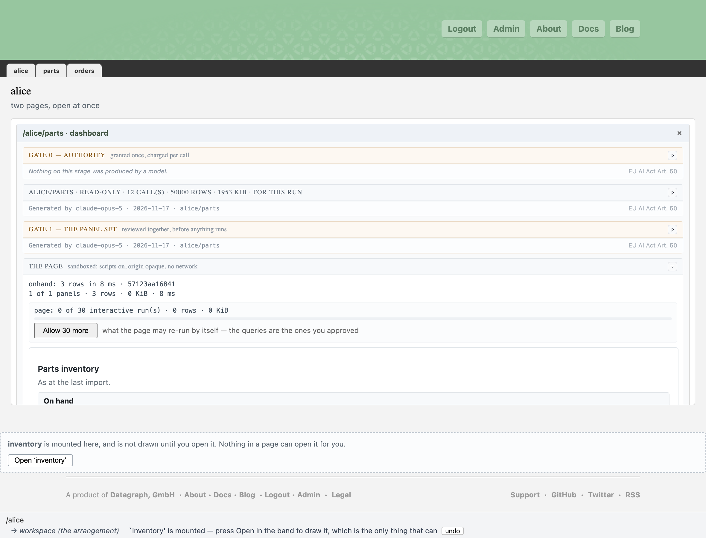
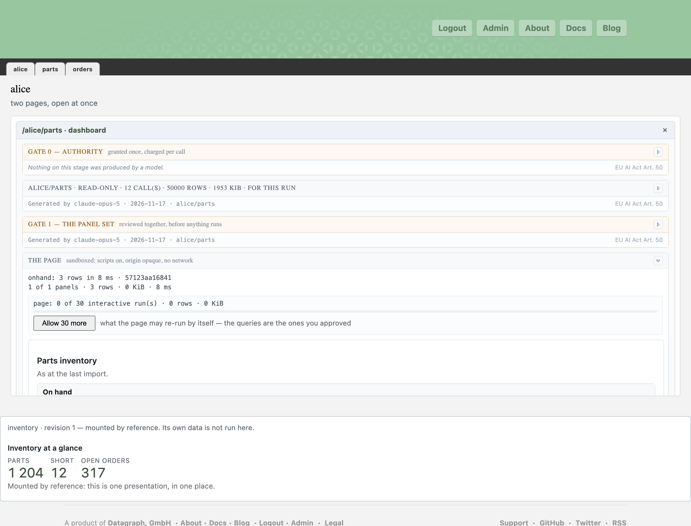
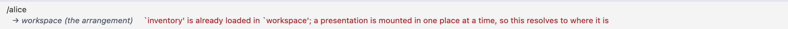
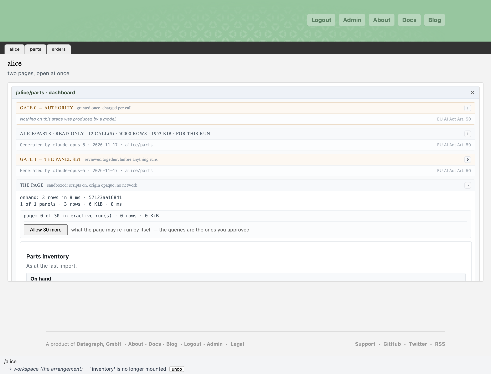

Lift, apply and mount, as a reader meets them. Every figure below is a step
tests/ui-arrange.browser.mjs asserted on the way past; the suite writes them as it
runs, so a figure that disagrees with the build is a figure that cannot be produced.

01The page a component will be lifted from, and the bar saying what a line typed into it will act on. `arrange' goes to the same address prose does.

# as ' — exact, whole-string, and never sent to a model. The anchor is the element's `data-ui'.">
02`lift # as ' — exact, whole-string, and never sent to a model. The anchor is the element's `data-ui'.

03The reply, and an undo beside it: the undo of a lift is to forget the entry, because a lift changed nothing on the page.

04An apply costs queries the reader has never seen, against addresses the arrangement's author chose. Both are shown, and nothing has run.

05The component is in the second page, drawn from data fetched for it — and the log line says which repository answered.

06`mount inventory' against the chrome. The band is a reference and nothing more: expansion is an act outside the representation (§21.4.3).

07Pressed. The mounted presentation is drawn in place, keeping its own element names — it is the same presentation, included by reference.

08The once-only rule, enforced by the store's own guard. Two mounts would put one presentation's element names into one document twice — a certain collision, not a risk.

09Unmounted. There is no refresh: taking up a revised source is this, followed by mounting it again.